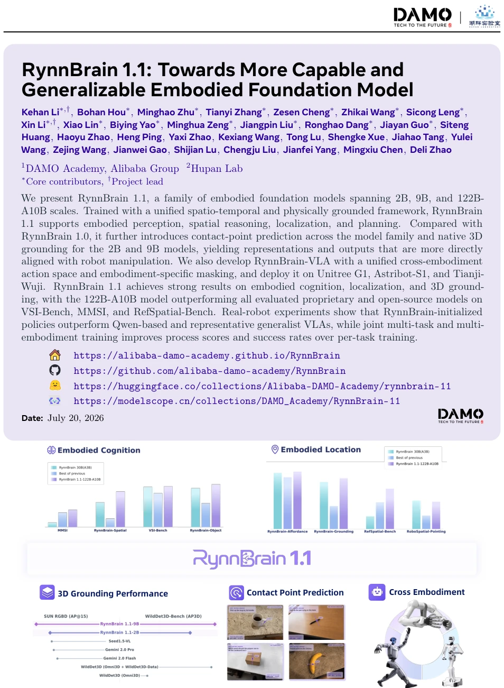
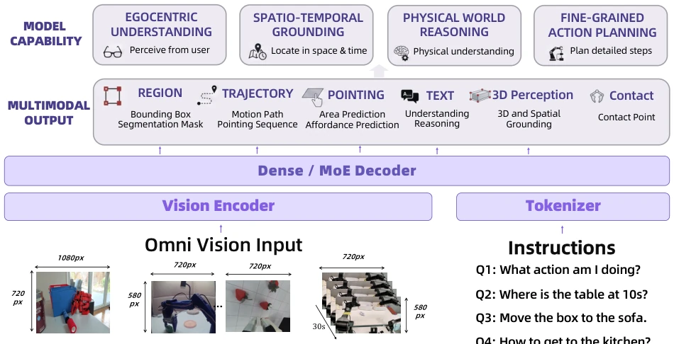
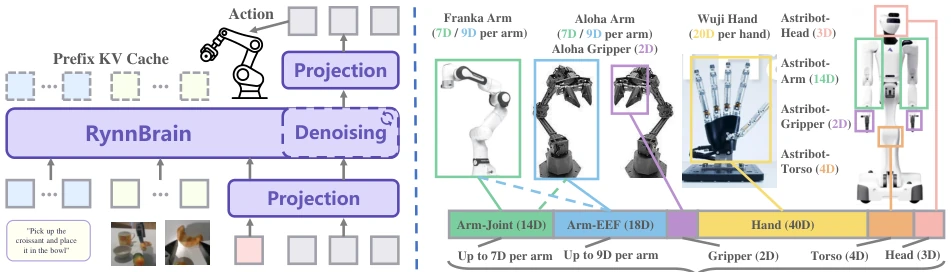
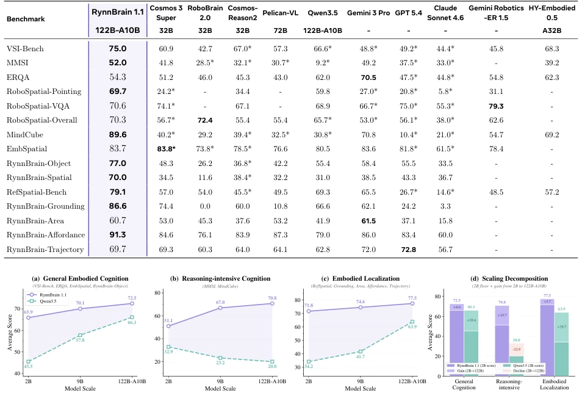
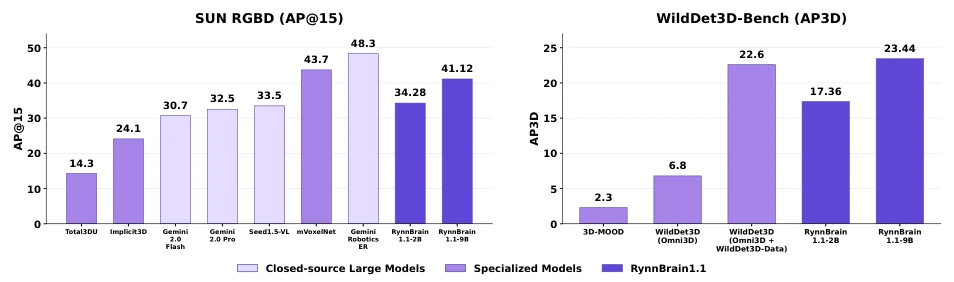
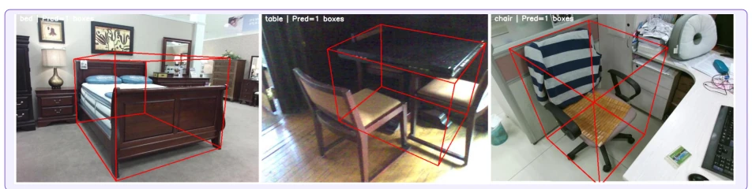
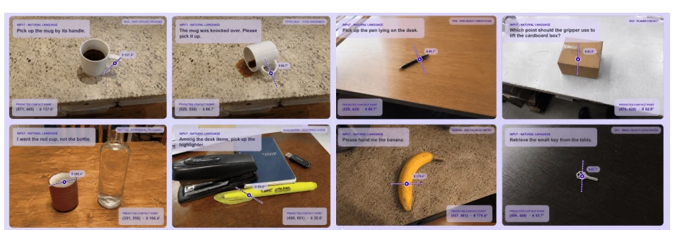
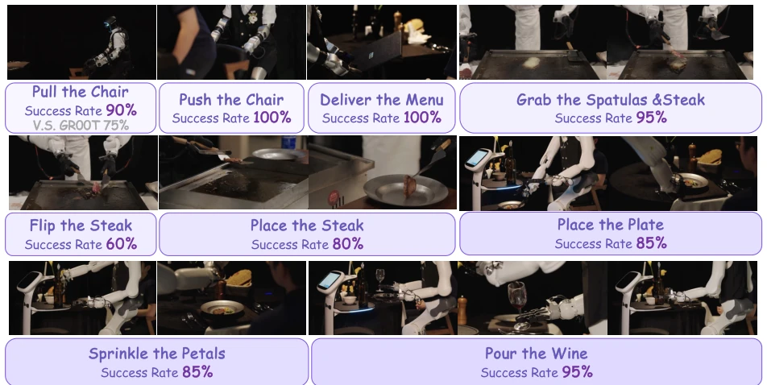

RynnBrain 1.1 is considered a sequel that stands out as a top contender in the embodied large model community. This time, not only did it scale up to 122B-A10B, but it also implemented a unified cross-robot action space, which is more substantial than simply stacking parameters. However, 3D grounding was surprisingly only provided for the 2B and 9B versions, while the 122B large model was not mentioned, which is a bit puzzling; does it mean the large model's modeling capability for 3D coordinates is actually worse than that of small models? Additionally, although it is claimed to be run on real robots such as Unitree G1, the contact point prediction is still based on projection of simulation data; how much of the grasping success rate on real robots is questionable, we still need to wait for more subsequent public data. Overall, the architectural unity is done well, but the term "generalizability" still needs to be questioned in the embodied field.
研究动机Motivation
具身智能的核心挑战在于视觉理解不仅要“看懂”，还要能“落地”到物理世界并转化为动作。RynnBrain 1.0 [20] 虽然探索了统一的多模态模型，但在表征与机器人操作的对齐上还不够直接。作者发现，之前的抓取矩形检测任务无法提供精确的接触点特征，且缺乏显式的 3D 建模能力，导致下游 VLA 策略初始化效果受限。此外，不同机器人形态各异，动作空间不兼容，难以实现跨形态的联合训练。因此，本研究旨在通过引入接触点预测和原生 3D grounding 任务，增强物理世界理解；同时设计统一动作空间，解决异构机器人间的策略迁移问题，验证大规模具身预训练对下游策略学习的促进作用。
The core challenge of embodied intelligence lies in visual understanding not only needing to "see clearly" but also to "be grounded" in the physical world and be converted into actions. Although RynnBrain 1.0 [20] explored unified multimodal models, the alignment between representation and robot manipulation was not direct enough. The authors found that previous grasp rectangle detection tasks could not provide precise contact point features, and lacked explicit 3D modeling capabilities, leading to limited effects on downstream VLA strategy initialization. In addition, different robots have various forms, action spaces are incompatible, making joint training across forms difficult to achieve. Therefore, this study aims to enhance physical world understanding by introducing contact point prediction and native 3D grounding tasks; meanwhile, design a unified action space to solve the strategy transfer problem between heterogeneous robots, and verify the promoting effect of large-scale embodied pre-training on downstream strategy learning.

Figure 1 We introduce RynnBrain 1.1, a model family comprising three variants—2B, 9B, and 122B-A10B—together with the post-trained RynnBrain-VLA. RynnBrain 1.1 achieves leading performance across a broad suite of bench- marks, particularly in cognition, localization, 3D grounding, and contact-point prediction. RynnBrain-VLA demon- strates significant promise in enabling action prediction across diverse embodiments within a unified action space.
RynnBrain 1.1 is built based on Qwen3.5 [53], adopting a Decoder-only architecture, containing a visual encoder, projection layer, and LLM backbone. The pre-training stage unified spatiotemporal modeling and physical world grounding, jointly generating language responses and spatial targets (bounding boxes, points, trajectories) through an autoregressive framework. The innovations lie in: 1) Contact point prediction: no longer predicting grasp rectangles, but predicting grasp center points (p) and planar rotation angles (θ), which fits operational semantics better; 2) Native 3D grounding: introducing 3D annotated data for 2B/9B models, directly predicting 3D bounding box parameters (position, size, orientation) under the camera coordinate system, discretized into integer tokens to adapt to autoregressive generation. The VLA stage adopts a Flow-matching framework, using RynnBrain as a single-stream Diffusion Transformer. The core design is a unified cross-form action space (81 dimensions), grouped by body parts (arms, hands, torso, etc.), activating available dimensions for different robots through specific masks to achieve joint training of heterogeneous data. During inference, a Real-time Chunking (RTC) mechanism is introduced, triggering a new inference every 5 steps, using the unexecuted part to guide denoising, ensuring action continuity.

Figure 2 Overview of the RynnBrain 1.1 architecture. Given language instructions and omni-visual inputs—including single-view images, multi-view images, and videos—RynnBrain produces a unified set of multimodal outputs through either a dense or a mixture-of-experts decoder. These outputs cover text, regions, trajectories, pointing, 3D perception, and contact signals, enabling egocentric understanding, spatiotemporal grounding, physically grounded reasoning, and fine-grained action planning in real-world environments.

Figure 3 RynnBrain-VLA architecture and unified action space. (Left) RynnBrain-VLA adopts a flow-matching framework in which the RynnBrain base model serves as a single-stream Diffusion Transformer (DiT). The model takes a packed sequence of language instruction, multi-camera observations, robot state, and noisy action chunks as input, and iteratively denoises to predict an action chunk. The instruction token prefix is cached via KV cache to reduce inference latency. (Right) Actions from heterogeneous robot embodiments are represented within a shared 81-dimensional action space partitioned into semantically aligned body-part groups: Arm-Joint (14D, up to 7D per arm), Arm-EEF (18D, up to 9D per arm), Gripper (2D), Hand (40D), Torso (4D), and Head (3D). Each embodiment activates only its phy
Evaluation covers embodied cognition, localization, and real robot experiments. On VSI-Bench, MMSI, and RefSpatial-Bench, the 122B-A10B model surpasses all private and open-source models. Scaling analysis shows that embodied pre-training is crucial for reasoning-intensive tasks, and pure VLM scaling may even lead to performance degradation. Real robot experiments were conducted on Unitree G1, Astribot-S1, and Tianji-Wuji, where the RynnBrain-VLA strategy outperformed the Qwen baseline and general VLA in both process scores and success rates. Joint multi-task and multi-form training yields better results than single-task fine-tuning. 3D grounding on 2B/9B models verified the effectiveness of explicit 3D supervision.

Figure 4 Scaling analysis of RynnBrain 1.1 vs. Qwen3.5 from 2B to 122B-A10B. (a)–(c) Average scores across three capability groups: general embodied cognition, reasoning-intensive cognition, and embodied localization. (d) Scaling decompo- sition showing the 2B performance floor and the gain from scaling to 122B-A10B.

Figure 5 Performance Comparison on SUN RGB-D and WildDet3D-Bench with RynnBrain 1.1-2B and 9B.

Figure 6 Qualitative examples of language-conditioned 3D grounding by RynnBrain 1.1. Given an image and a target object description, the model predicts an oriented 3D bounding box in the camera coordinate system. The examples cover objects with different scales, shapes, viewpoints, and levels of occlusion in indoor environments.

Figure 7 Qualitative results of contact point prediction by RynnBrain 1.1. Given an image and a natural-language instruction, the model predicts an action-relevant contact point together with its in-plane grasp orientation. The examples cover diverse object geometries, object states, target parts, and cluttered scenes, demonstrating instruction- conditioned contact grounding beyond object-level localization. Coordinates are normalized to [0, 1000].

Figure 8 Real-robot evaluation across all tasks considered in our experiments. The tasks are performed in diverse real-life environments and cover whole-body manipulation, bimanual coordination, dexterous-hand operation, object placement, furniture interaction, and object delivery. Representative execution snapshots and success rates over 20 trials are shown for each task.